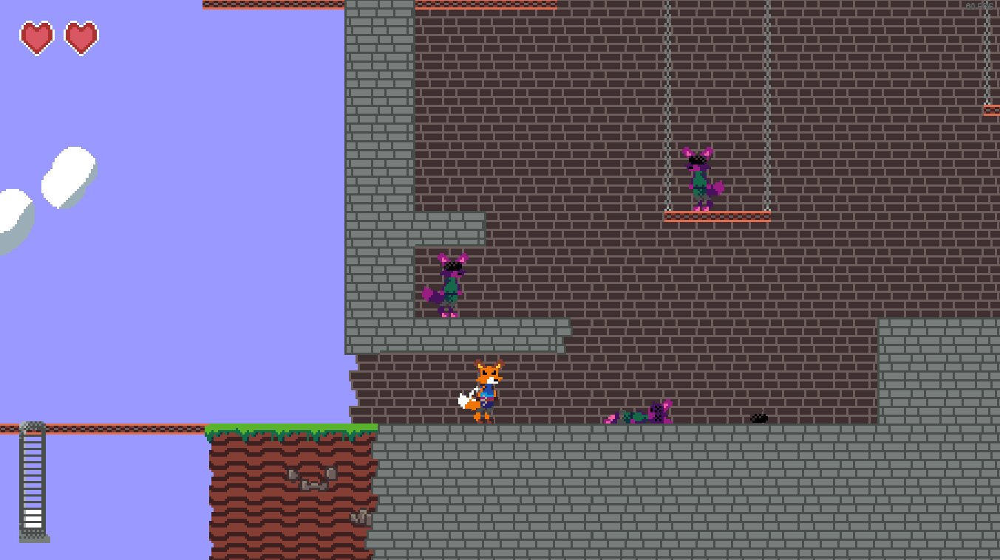
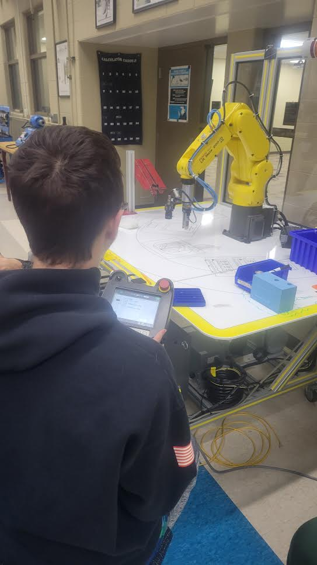
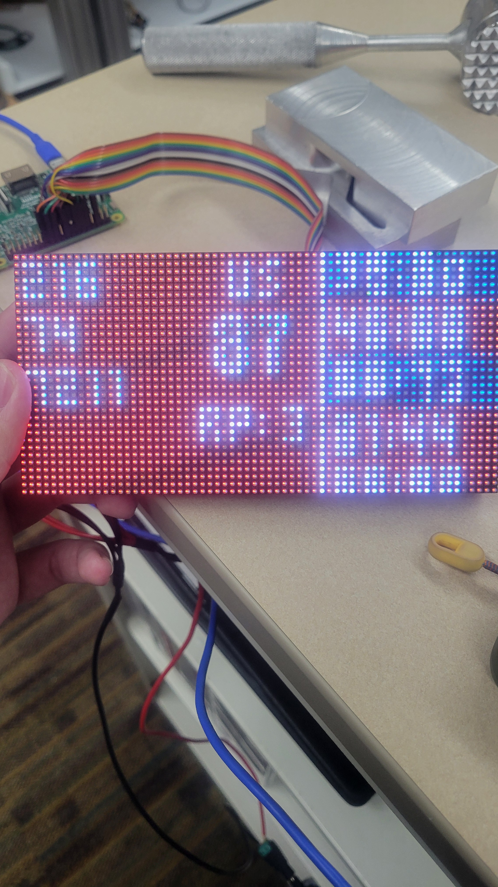
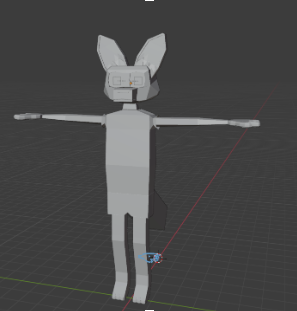
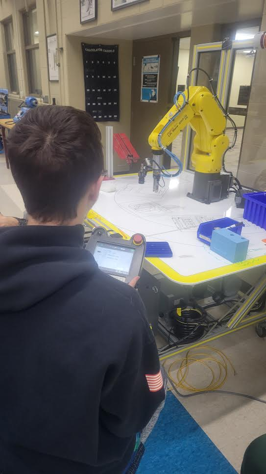
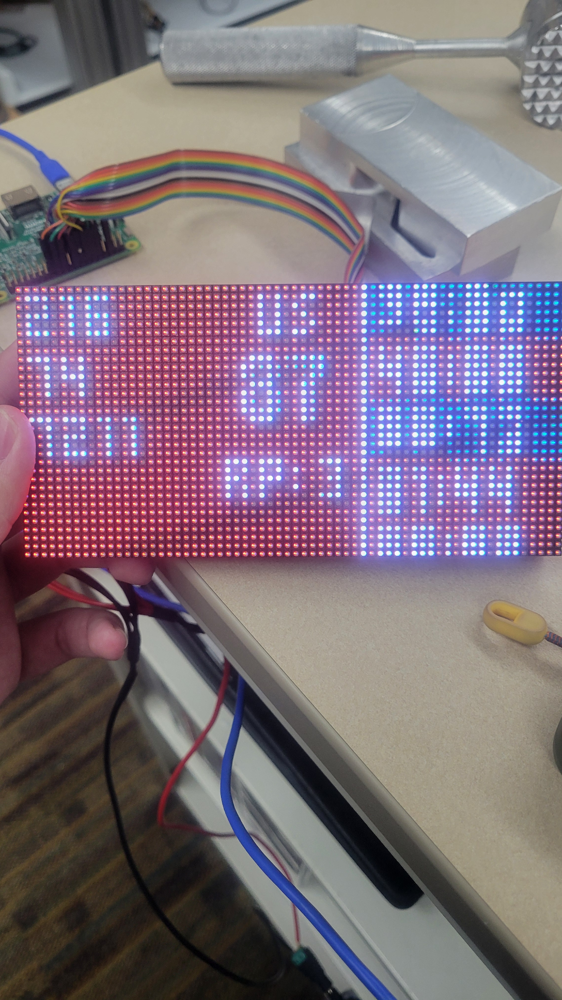
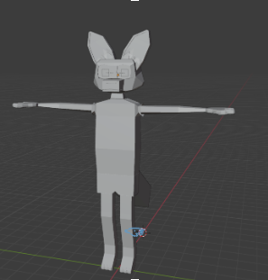
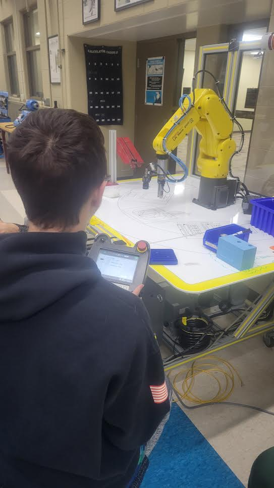
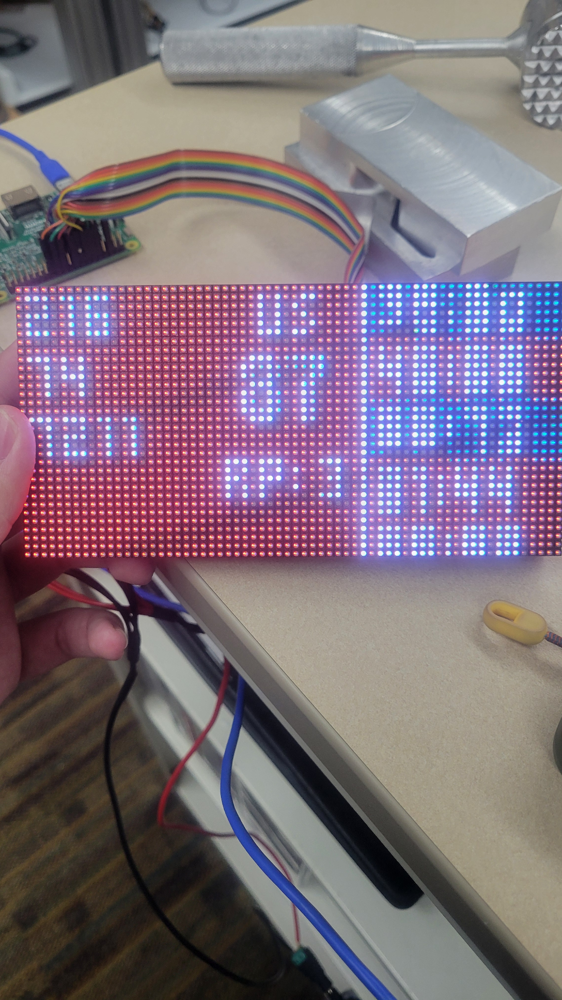
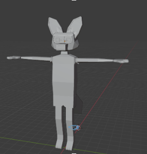

Hey there, I'm Noah Sapelak! Currently I attend Holly High School/Oakland Schools Technical Campus Northwest, all while entering my senior year! I spend my time at school taking AP classes, and helping out the schools robotics team, Hollywood Robotics (7211)! When I'm not doing that, I like to play on my computer and work on projects!
I have plenty of experience in several tools!
-6 years using GameMaker: Studio 2
-Using Java to program FRC Robots
-Programming in Python and C++ to program with microcontrollers
-Using Blender, OnShape, and Solidworks to craft 3D models
-Slice models to print on 3D printers (Prusa, Creality, Anycubic, Bambu, etc.)
-Edit videos in Davinci Resolve
-6 years using GameMaker: Studio 2
-Using Java to program FRC Robots
-Programming in Python and C++ to program with microcontrollers
-Using Blender, OnShape, and Solidworks to craft 3D models
-Slice models to print on 3D printers (Prusa, Creality, Anycubic, Bambu, etc.)
-Edit videos in Davinci Resolve
CONTACT ME AT NOAH@FENNECS.DEV
(If that doesnt work, use PGtheVRguyGAMES@gmail.com)

 







